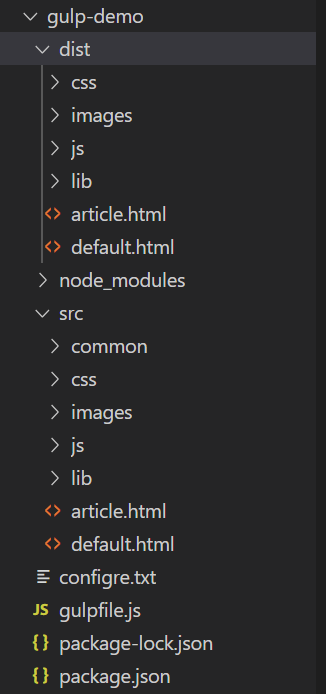

1、安装gulp，由于某些在下不能解决的原因，故使用gulp 3.9.1版本
安装命令： npm install gulp@3.9.1
注意不要直接使用 ： npm install gulp 安装，直接使用npm install gulp安装的版本是4.0版本，可使用 gulp -v命令查看gulp版本
2、我的文件结构
dist : 目标文件夹
存放压缩后的代码
src ： 代码源文件夹
存放源代码

3、案例代码
// 引用 gulp
const gulp = require('gulp');
// 引用gulp插件
// 引用gulp-html压缩插件
const htmlmin = require('gulp-htmlmin');
// 抽取公共代码模块
const fileinclude = require('gulp-file-include');
// 引入gulp-less语法转换模块
const less = require('gulp-less');
// 引入gulp-csso模块 压缩css代码
const csso = require('gulp-csso');
// 引入gulp-babel模块
const babel = require('gulp-babel');
// 引入gulp-uglify模块压缩js代码
const uglify = require('gulp-uglify');
// 使用gulp.task()创建任务
// 1- 任务的名称
// 2- 任务的回调函数
gulp.task('demotask', () => {
console.log('task 任务');
// 使用gulp.src获取要处理的文件
gulp.src('./src/css/base.css')
// 将处理后的文件输出到dist目录
.pipe(gulp.dest('dist/css')); // 会自动创建dist/css目录
console.log('cssmin successful');
});
// html任务
// 1-html文件中代码的压缩操作
// 2-抽取html文件中的公共代码
gulp.task('htmlmin', () => {
// 使用通配符 * 选择src文件夹下的所有html文件
gulp.src('./src/*.html')
// 抽取html文件中的公共代码
.pipe(fileinclude())
// 压缩html文件中的代码 collapseWhitespace （将空格折叠）
.pipe(htmlmin({ collapseWhitespace: true }))
// 处理后的文件输出目录
.pipe(gulp.dest('dist'));
console.log('htmlmin successful');
});
// css 任务
// 1-less语法转换
// 2-css代码压缩
gulp.task('cssmin', () => {
// 选择两个不同文件类型的所有文件
gulp.src(['./src/css/*.less', './src/css/*.css'])
// 将less转为css
.pipe(less())
// 调用csso 压缩css代码
.pipe(csso())
// 输出目录
.pipe(gulp.dest('dist/css'))
});
// js任务
// 1-ES6代码转换
// 2-代码压缩
gulp.task('jsmin', () => {
gulp.src('./src/js/*.js')
.pipe(babel({
// 它可以将当前代码的运行环境， 将代码转换为当前运行环境所支持的代码
presets: ['@babel/env']
}))
// 压缩js代码
.pipe(uglify())
.pipe(gulp.dest('dist/js'))
});
// 复制文件夹
gulp.task('copy', () => {
gulp.src('./src/images/*')
.pipe(gulp.dest('dist/images'))
gulp.src('./src/lib/*')
.pipe(gulp.dest('dist/lib'))
});
// 构建任务
gulp.task('build', ['htmlmin', 'cssmin', 'jsmin', 'copy']);
/*
使用gulp build构建任务时报错
Task function must be specified 这是因为安装了guilp 4， 需要安装gulp 3.9.1 先卸载再安装
npm uninstall gulp
npm install gulp@3.9.1
PS D:\WorkSpace\WebProject\part07_nodeJs\day01\code2\gulp-demo> gulp build
[14:25:46] Using gulpfile D:\WorkSpace\WebProject\part07_nodeJs\day01\code2\gulp-demo\gulpfile.js
[14:25:46] Starting 'htmlmin'...
htmlmin successful
[14:25:46] Finished 'htmlmin' after 19 ms
[14:25:46] Starting 'cssmin'...
[14:25:46] Finished 'cssmin' after 4.7 ms
[14:25:46] Starting 'jsmin'...
[14:25:46] Finished 'jsmin' after 1.6 ms
[14:25:46] Starting 'copy'...
[14:25:46] Finished 'copy' after 733 μs
[14:25:46] Starting 'build'...
[14:25:46] Finished 'build' after 97 μs
*/